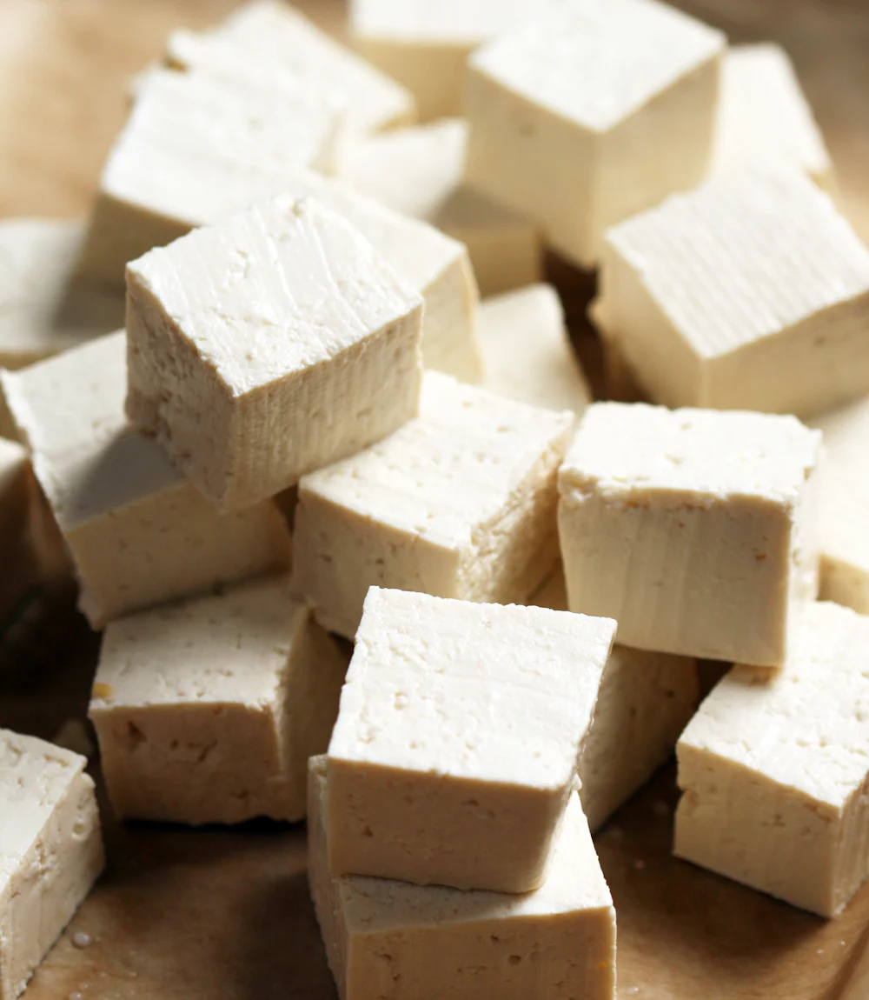
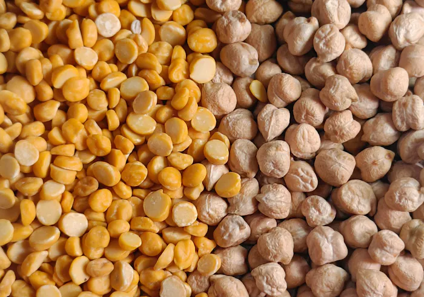
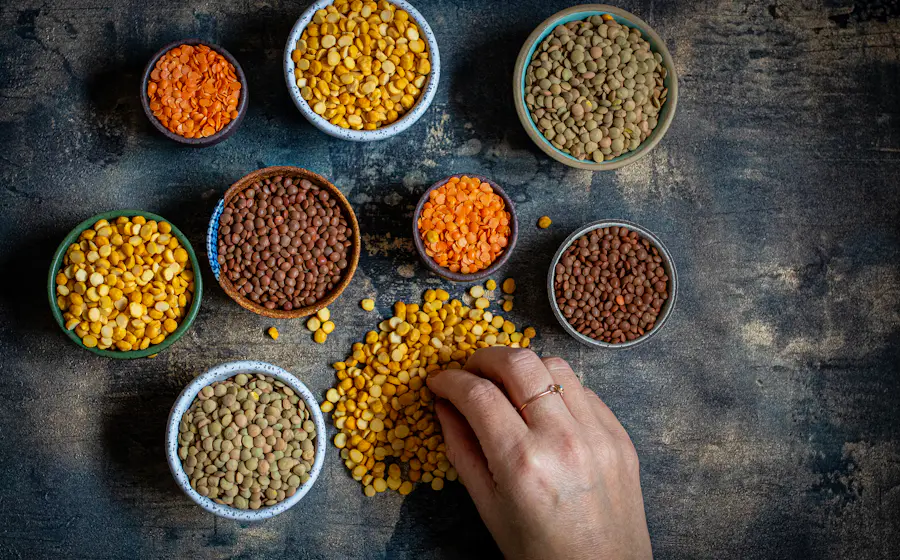
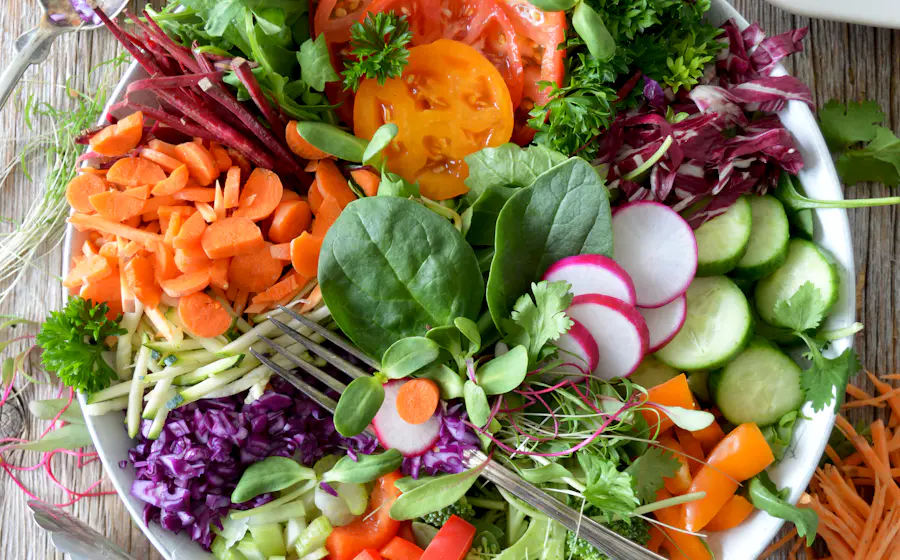

lis ton étiquette en 30 secondes
5 coups d'œil, zéro prise de tête. Pas de note toute faite : c'est toi qui décides.

pas de note toute faite. pas de jugement. juste les bons repères pour lire une étiquette toi-même, en 30 secondes chrono.
Un outil né d'un TFE en diététique, pensé pour les débutant·es.
ce que l'enquête a révélé
regardent la B12 et le fer sur l'étiquette. C'est pourtant l'enjeu principal d'une alimentation végétarienne.
citent le prix comme premier frein.
pensent que le quinoa contient du blé.
trouvent qu'un outil comme celui-ci est utile.
les 5 coups d'œil
Garde-les en tête au rayon frais. Après ça, n'importe quelle étiquette devient lisible.
- les ingrédients
Le premier ingrédient te dit de quoi est fait le produit : soja, blé, pois, champignon…
- les protéines
Riche si au moins 20 % de l'énergie vient des protéines.
- la B12 et le fer
Cherche « vitamine B12 » ou « fer » dans les ingrédients ou le tableau.
- le sel
Plus de 1,5 g pour 100 g, c'est beaucoup.
- les graisses saturées
Plus de 5 g pour 100 g, c'est beaucoup.
à toi de jouer
Touche un mot souligné sur l'étiquette : on t'explique tout.
Eau, , huile de colza, , arômes, sel, fibres de pois, , , .
| Énergie | 210 kcal |
| Matières grasses | 11 g |
| 1,2 g | |
| Glucides | 4 g |
| Fibres | 4 g |
| 18 g | |
| 1,3 g |
Touche une zone soulignée de l'étiquette : l'explication s'affiche ici.
Le soja est la base de ce produit. C'est une légumineuse riche en protéines. Allergène à signaler sur l'étiquette.
[Texte à valider par Camille]
Les protéines de blé apportent du gluten. À éviter en cas de maladie cœliaque ou d'allergie au blé.
[Texte à valider par Camille]
La méthylcellulose sert à lier le produit, comme l'œuf dans un hachis. Elle est autorisée en Europe (E461).
[Texte et source à valider par Camille]
Bonne nouvelle : ce produit est enrichi en vitamine B12. Elle ne se trouve pas naturellement dans les végétaux.
[Source à compléter]
Du fer a été ajouté. Le fer des végétaux est mieux absorbé avec de la vitamine C (poivron, agrumes, kiwi).
[Source à compléter]
18 g × 4 ÷ 210 kcal = 34 % de l'énergie vient des protéines. Au-dessus de 20 %, le produit peut être dit « riche en protéines ».
Règlement (CE) n° 1924/2006
1,3 g pour 100 g. Une portion de 150 g apporte environ 2 g de sel, soit un tiers du repère de 6 g par jour.
Food Standards Agency (UK)
1,2 g pour 100 g : c'est peu. Au-dessus de 5 g, c'est beaucoup.
Food Standards Agency (UK)
va plus loin




sa place dans l'assiette

Un simili remplace la viande ou le poisson dans le repas. Il ne remplace pas les légumes ni les féculents.
[Texte à compléter par Camille]